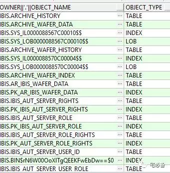
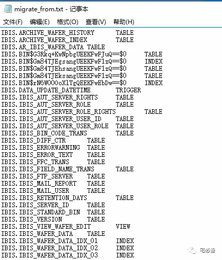
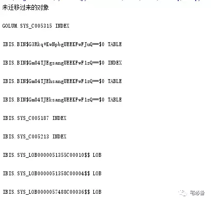
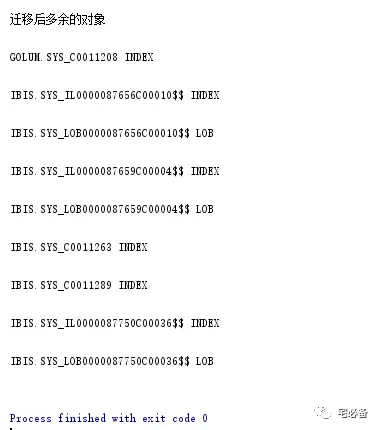

数据库迁移比对小工具
这个专题分享点日常运维中用到的Python脚本
在做数据库迁移后，我们可能需要知道我们的表，索引，存储过程等对象是否迁移成功 这时可以用如下脚本来进行检查
环境准备
操作系统: Windows 7及以上
Python版本 :3.5
1. 检查源库和目标库的对象
select OWNER ||'.'||OBJECT_NAME,OBJECT_TYPE from dba_objects where owner in ('IBIS');

2. 保存源库和目标库信息至文件
将源端的的信息保存在migrate_from.txt文件中
将目标库的信息保存在migrate_to.txt文件中
注意:最后一行时不要换行

3. 脚本内容
#coding=utf8
import os
diff1=[]
diff2=[]
migrate_from=open(r"c:\migrate_from.txt")
migrate_to=open(r"c:\migrate_to.txt")
for i in migrate_to:
diff1.append(i.strip().replace('\t',' '))
for k in migrate_from:
diff2.append(k.strip().replace('\t',' '))
print ("未迁移过来的对象\n")
for j in diff2:
if j not in diff1:
print(j+'\n')
print ("迁移后多余的对象\n")
for l in diff1:
if l not in diff2:
print( l+'\n')
migrate_from.close()
migrate_to.close()
4. 对比结果
使用pycharm运行后:


注意一些索引和lob段迁移前后名称会不同
这时可以通过查询其主表是否相同来判断是否迁移成功
select * from dba_lobs where owner='IBIS';
select * from dba_indexes where owner='IBIS';
一般看数量对上就是正确的了,当然多出来点也是行的
这是一个比较简单的脚本，后续带来更多，谢谢支持